Continuous¶
Uniform([lower, upper, transform]) |
Continuous uniform log-likelihood. |
Flat(*args, **kwargs) |
Uninformative log-likelihood that returns 0 regardless of the passed value. |
HalfFlat(*args, **kwargs) |
Improper flat prior over the positive reals. |
Normal([mu, sd, tau]) |
Univariate normal log-likelihood. |
HalfNormal([sd, tau]) |
Half-normal log-likelihood. |
SkewNormal([mu, sd, tau, alpha]) |
Univariate skew-normal log-likelihood. |
Beta([alpha, beta, mu, sd]) |
Beta log-likelihood. |
Exponential(lam, *args, **kwargs) |
Exponential log-likelihood. |
Laplace(mu, b, *args, **kwargs) |
Laplace log-likelihood. |
StudentT(nu[, mu, lam, sd]) |
Student’s T log-likelihood. |
HalfStudentT([nu, sd, lam]) |
Half Student’s T log-likelihood |
Cauchy(alpha, beta, *args, **kwargs) |
Cauchy log-likelihood. |
HalfCauchy(beta, *args, **kwargs) |
Half-Cauchy log-likelihood. |
Gamma([alpha, beta, mu, sd]) |
Gamma log-likelihood. |
Weibull(alpha, beta, *args, **kwargs) |
Weibull log-likelihood. |
Lognormal([mu, sd, tau]) |
Log-normal log-likelihood. |
ChiSquared(nu, *args, **kwargs) |
\(\chi^2\) log-likelihood. |
Wald([mu, lam, phi, alpha]) |
Wald log-likelihood. |
Pareto(alpha, m, *args, **kwargs) |
Pareto log-likelihood. |
InverseGamma(alpha[, beta]) |
Inverse gamma log-likelihood, the reciprocal of the gamma distribution. |
ExGaussian(mu, sigma, nu, *args, **kwargs) |
Exponentially modified Gaussian log-likelihood. |
VonMises([mu, kappa, transform]) |
Univariate VonMises log-likelihood. |
Triangular([lower, upper, c]) |
Continuous Triangular log-likelihood Implemented by J. |
Gumbel([mu, beta]) |
Univariate Gumbel log-likelihood |
Interpolated(x_points, pdf_points[, transform]) |
Univariate probability distribution defined as a linear interpolation of probability density function evaluated on some lattice of points. |
pymc3.distributions
A collection of common probability distributions for stochastic nodes in PyMC.
-
class
pymc3.distributions.continuous.Uniform(lower=0, upper=1, transform='interval', *args, **kwargs)¶ Continuous uniform log-likelihood.
\[f(x \mid lower, upper) = \frac{1}{upper-lower}\](Source code, png, hires.png, pdf)
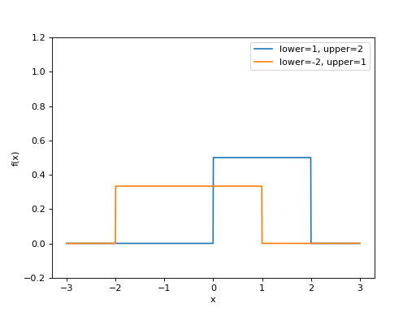Support \(x \in [lower, upper]\) Mean \(\dfrac{lower + upper}{2}\) Variance \(\dfrac{(upper - lower)^2}{12}\) Parameters: - lower (float) – Lower limit.
- upper (float) – Upper limit.
{kind=link}
{kind=link}
-
class
pymc3.distributions.continuous.Flat(*args, **kwargs)¶ Uninformative log-likelihood that returns 0 regardless of the passed value.
-
class
pymc3.distributions.continuous.HalfFlat(*args, **kwargs)¶ Improper flat prior over the positive reals.
-
class
pymc3.distributions.continuous.Normal(mu=0, sd=None, tau=None, **kwargs)¶ Univariate normal log-likelihood.
\[f(x \mid \mu, \tau) = \sqrt{\frac{\tau}{2\pi}} \exp\left\{ -\frac{\tau}{2} (x-\mu)^2 \right\}\]Support \(x \in \mathbb{R}\) Mean \(\mu\) Variance \(\dfrac{1}{\tau}\) or \(\sigma^2\) Normal distribution can be parameterized either in terms of precision or standard deviation. The link between the two parametrizations is given by
\[\tau = \dfrac{1}{\sigma^2}\](Source code, png, hires.png, pdf)
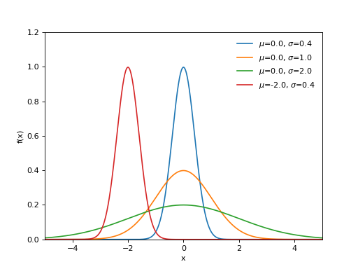Parameters: - mu (float) – Mean.
- sd (float) – Standard deviation (sd > 0).
- tau (float) – Precision (tau > 0).
{kind=link}
{kind=link}
-
class
pymc3.distributions.continuous.Beta(alpha=None, beta=None, mu=None, sd=None, *args, **kwargs)¶ Beta log-likelihood.
\[f(x \mid \alpha, \beta) = \frac{x^{\alpha - 1} (1 - x)^{\beta - 1}}{B(\alpha, \beta)}\](Source code, png, hires.png, pdf)
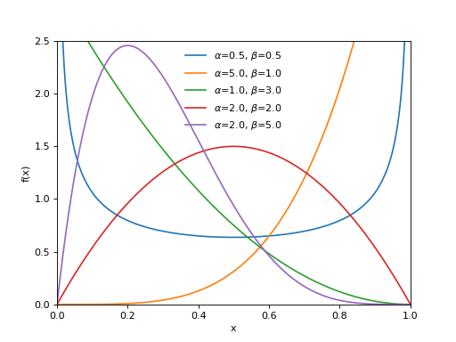Support \(x \in (0, 1)\) Mean \(\dfrac{\alpha}{\alpha + \beta}\) Variance \(\dfrac{\alpha \beta}{(\alpha+\beta)^2(\alpha+\beta+1)}\) Beta distribution can be parameterized either in terms of alpha and beta or mean and standard deviation. The link between the two parametrizations is given by
\[ \begin{align}\begin{aligned}\begin{split}\alpha &= \mu \kappa \\ \beta &= (1 - \mu) \kappa\end{split}\\\text{where } \kappa = \frac{\mu(1-\mu)}{\sigma^2} - 1\end{aligned}\end{align} \]Parameters: - alpha (float) – alpha > 0.
- beta (float) – beta > 0.
- mu (float) – Alternative mean (0 < mu < 1).
- sd (float) – Alternative standard deviation (0 < sd < sqrt(mu * (1 - mu))).
Notes
Beta distribution is a conjugate prior for the parameter \(p\) of the binomial distribution.
{kind=link}
{kind=link}
-
class
pymc3.distributions.continuous.Exponential(lam, *args, **kwargs)¶ Exponential log-likelihood.
\[f(x \mid \lambda) = \lambda \exp\left\{ -\lambda x \right\}\](Source code, png, hires.png, pdf)
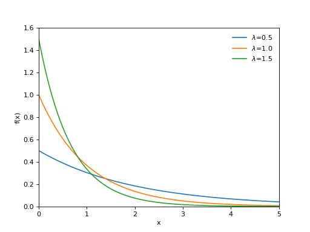Support \(x \in [0, \infty)\) Mean \(\dfrac{1}{\lambda}\) Variance \(\dfrac{1}{\lambda^2}\) Parameters: lam (float) – Rate or inverse scale (lam > 0)
{kind=link}
{kind=link}
-
class
pymc3.distributions.continuous.Laplace(mu, b, *args, **kwargs)¶ Laplace log-likelihood.
\[f(x \mid \mu, b) = \frac{1}{2b} \exp \left\{ - \frac{|x - \mu|}{b} \right\}\](Source code, png, hires.png, pdf)
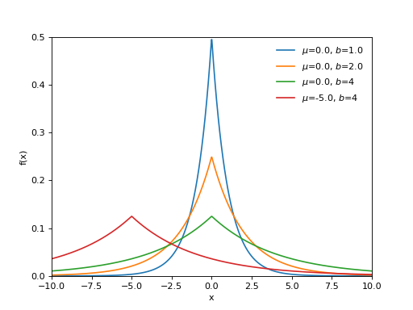Support \(x \in \mathbb{R}\) Mean \(\mu\) Variance \(2 b^2\) Parameters: - mu (float) – Location parameter.
- b (float) – Scale parameter (b > 0).
{kind=link}
{kind=link}
-
class
pymc3.distributions.continuous.StudentT(nu, mu=0, lam=None, sd=None, *args, **kwargs)¶ Student’s T log-likelihood.
Describes a normal variable whose precision is gamma distributed. If only nu parameter is passed, this specifies a standard (central) Student’s T.
\[f(x|\mu,\lambda,\nu) = \frac{\Gamma(\frac{\nu + 1}{2})}{\Gamma(\frac{\nu}{2})} \left(\frac{\lambda}{\pi\nu}\right)^{\frac{1}{2}} \left[1+\frac{\lambda(x-\mu)^2}{\nu}\right]^{-\frac{\nu+1}{2}}\](Source code, png, hires.png, pdf)
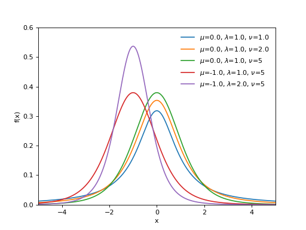Support \(x \in \mathbb{R}\) Parameters: - nu (float) – Degrees of freedom, also known as normality parameter (nu > 0).
- mu (float) – Location parameter.
- lam (float) – Scale parameter (lam > 0).
{kind=link}
{kind=link}
-
class
pymc3.distributions.continuous.Cauchy(alpha, beta, *args, **kwargs)¶ Cauchy log-likelihood.
Also known as the Lorentz or the Breit-Wigner distribution.
\[f(x \mid \alpha, \beta) = \frac{1}{\pi \beta [1 + (\frac{x-\alpha}{\beta})^2]}\](Source code, png, hires.png, pdf)
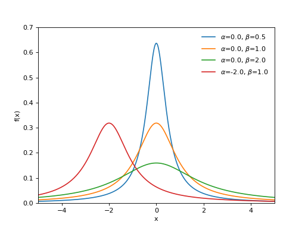Support \(x \in \mathbb{R}\) Mode \(\alpha\) Mean undefined Variance undefined Parameters: - alpha (float) – Location parameter
- beta (float) – Scale parameter > 0
{kind=link}
{kind=link}
-
class
pymc3.distributions.continuous.HalfCauchy(beta, *args, **kwargs)¶ Half-Cauchy log-likelihood.
\[f(x \mid \beta) = \frac{2}{\pi \beta [1 + (\frac{x}{\beta})^2]}\](Source code, png, hires.png, pdf)
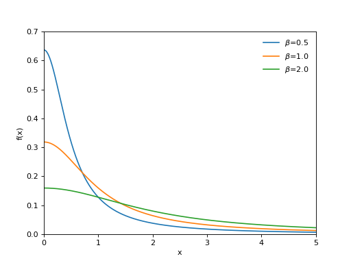Support \(x \in \mathbb{R}\) Mode 0 Mean undefined Variance undefined Parameters: beta (float) – Scale parameter (beta > 0).
{kind=link}
{kind=link}
-
class
pymc3.distributions.continuous.Gamma(alpha=None, beta=None, mu=None, sd=None, *args, **kwargs)¶ Gamma log-likelihood.
Represents the sum of alpha exponentially distributed random variables, each of which has mean beta.
\[f(x \mid \alpha, \beta) = \frac{\beta^{\alpha}x^{\alpha-1}e^{-\beta x}}{\Gamma(\alpha)}\](Source code, png, hires.png, pdf)
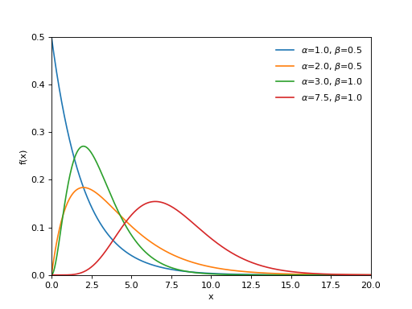Support \(x \in (0, \infty)\) Mean \(\dfrac{\alpha}{\beta}\) Variance \(\dfrac{\alpha}{\beta^2}\) Gamma distribution can be parameterized either in terms of alpha and beta or mean and standard deviation. The link between the two parametrizations is given by
\[\begin{split}\alpha &= \frac{\mu^2}{\sigma^2} \\ \beta &= \frac{\mu}{\sigma^2}\end{split}\]Parameters: - alpha (float) – Shape parameter (alpha > 0).
- beta (float) – Rate parameter (beta > 0).
- mu (float) – Alternative shape parameter (mu > 0).
- sd (float) – Alternative scale parameter (sd > 0).
{kind=link}
{kind=link}
-
class
pymc3.distributions.continuous.Weibull(alpha, beta, *args, **kwargs)¶ Weibull log-likelihood.
\[f(x \mid \alpha, \beta) = \frac{\alpha x^{\alpha - 1} \exp(-(\frac{x}{\beta})^{\alpha})}{\beta^\alpha}\](Source code, png, hires.png, pdf)
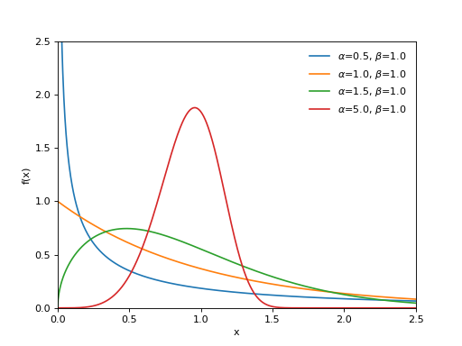Support \(x \in [0, \infty)\) Mean \(\beta \Gamma(1 + \frac{1}{\alpha})\) Variance \(\beta^2 \Gamma(1 + \frac{2}{\alpha} - \mu^2)\) Parameters: - alpha (float) – Shape parameter (alpha > 0).
- beta (float) – Scale parameter (beta > 0).
{kind=link}
{kind=link}
-
class
pymc3.distributions.continuous.HalfStudentT(nu=1, sd=None, lam=None, *args, **kwargs)¶ Half Student’s T log-likelihood
\[f(x \mid \sigma,\nu) = \frac{2\;\Gamma\left(\frac{\nu+1}{2}\right)} {\Gamma\left(\frac{\nu}{2}\right)\sqrt{\nu\pi\sigma^2}} \left(1+\frac{1}{\nu}\frac{x^2}{\sigma^2}\right)^{-\frac{\nu+1}{2}}\](Source code, png, hires.png, pdf)
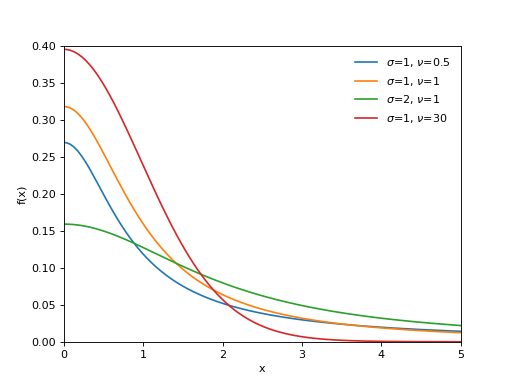Support \(x \in [0, \infty)\) Parameters: - nu (float) – Degrees of freedom, also known as normality parameter (nu > 0).
- sd (float) – Scale parameter (sd > 0). Converges to the standard deviation as nu increases
- lam (float) – Scale parameter (lam > 0). Converges to the precision as nu increases
{kind=link}
{kind=link}
-
class
pymc3.distributions.continuous.Lognormal(mu=0, sd=None, tau=None, *args, **kwargs)¶ Log-normal log-likelihood.
Distribution of any random variable whose logarithm is normally distributed. A variable might be modeled as log-normal if it can be thought of as the multiplicative product of many small independent factors.
\[f(x \mid \mu, \tau) = \frac{1}{x} \sqrt{\frac{\tau}{2\pi}} \exp\left\{ -\frac{\tau}{2} (\ln(x)-\mu)^2 \right\}\](Source code, png, hires.png, pdf)
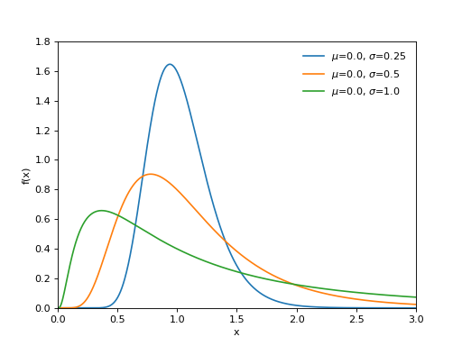Support \(x \in [0, \infty)\) Mean \(\exp\{\mu + \frac{1}{2\tau}\}\) Variance \((\exp\{\frac{1}{\tau}\} - 1) \times \exp\{2\mu + \frac{1}{\tau}\}\) Parameters: - mu (float) – Location parameter.
- tau (float) – Scale parameter (tau > 0).
{kind=link}
{kind=link}
-
class
pymc3.distributions.continuous.ChiSquared(nu, *args, **kwargs)¶ \(\chi^2\) log-likelihood.
\[f(x \mid \nu) = \frac{x^{(\nu-2)/2}e^{-x/2}}{2^{\nu/2}\Gamma(\nu/2)}\](Source code, png, hires.png, pdf)
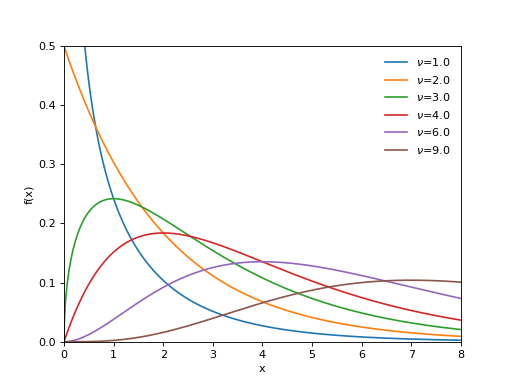Support \(x \in [0, \infty)\) Mean \(\nu\) Variance \(2 \nu\) Parameters: nu (int) – Degrees of freedom (nu > 0).
{kind=link}
{kind=link}
-
class
pymc3.distributions.continuous.HalfNormal(sd=None, tau=None, *args, **kwargs)¶ Half-normal log-likelihood.
\[f(x \mid \tau) = \sqrt{\frac{2\tau}{\pi}} \exp\left\{ {\frac{-x^2 \tau}{2}}\right\}\](Source code, png, hires.png, pdf)
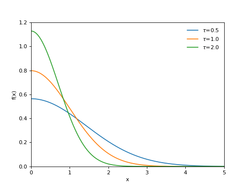Support \(x \in [0, \infty)\) Mean \(0\) Variance \(\dfrac{1}{\tau}\) or \(\sigma^2\) Parameters: - sd (float) – Standard deviation (sd > 0).
- tau (float) – Precision (tau > 0).
{kind=link}
{kind=link}
-
class
pymc3.distributions.continuous.Wald(mu=None, lam=None, phi=None, alpha=0.0, *args, **kwargs)¶ Wald log-likelihood.
\[f(x \mid \mu, \lambda) = \left(\frac{\lambda}{2\pi)}\right)^{1/2} x^{-3/2} \exp\left\{ -\frac{\lambda}{2x}\left(\frac{x-\mu}{\mu}\right)^2 \right\}\](Source code, png, hires.png, pdf)
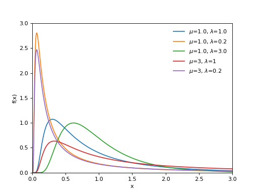Support \(x \in (0, \infty)\) Mean \(\mu\) Variance \(\dfrac{\mu^3}{\lambda}\) Wald distribution can be parameterized either in terms of lam or phi. The link between the two parametrizations is given by
\[\phi = \dfrac{\lambda}{\mu}\]Parameters: - mu (float, optional) – Mean of the distribution (mu > 0).
- lam (float, optional) – Relative precision (lam > 0).
- phi (float, optional) – Alternative shape parameter (phi > 0).
- alpha (float, optional) – Shift/location parameter (alpha >= 0).
Notes
To instantiate the distribution specify any of the following
- only mu (in this case lam will be 1)
- mu and lam
- mu and phi
- lam and phi
References
[Tweedie1957812] Tweedie, M. C. K. (1957). Statistical Properties of Inverse Gaussian Distributions I. The Annals of Mathematical Statistics, Vol. 28, No. 2, pp. 362-377 [Michael1976812] Michael, J. R., Schucany, W. R. and Hass, R. W. (1976). Generating Random Variates Using Transformations with Multiple Roots. The American Statistician, Vol. 30, No. 2, pp. 88-90
{kind=link}
{kind=link}
-
class
pymc3.distributions.continuous.Pareto(alpha, m, *args, **kwargs)¶ Pareto log-likelihood.
Often used to characterize wealth distribution, or other examples of the 80/20 rule.
\[f(x \mid \alpha, m) = \frac{\alpha m^{\alpha}}{x^{\alpha+1}}\](Source code, png, hires.png, pdf)
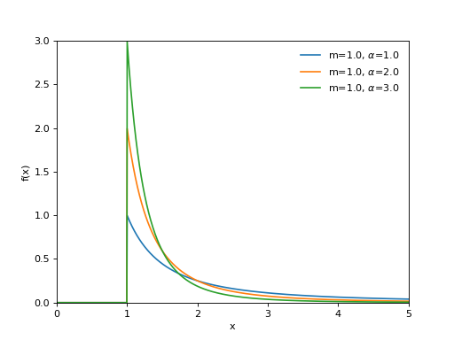Support \(x \in [m, \infty)\) Mean \(\dfrac{\alpha m}{\alpha - 1}\) for \(\alpha \ge 1\) Variance \(\dfrac{m \alpha}{(\alpha - 1)^2 (\alpha - 2)}\) for \(\alpha > 2\) Parameters: - alpha (float) – Shape parameter (alpha > 0).
- m (float) – Scale parameter (m > 0).
{kind=link}
{kind=link}
-
class
pymc3.distributions.continuous.InverseGamma(alpha, beta=1, *args, **kwargs)¶ Inverse gamma log-likelihood, the reciprocal of the gamma distribution.
\[f(x \mid \alpha, \beta) = \frac{\beta^{\alpha}}{\Gamma(\alpha)} x^{-\alpha - 1} \exp\left(\frac{-\beta}{x}\right)\](Source code, png, hires.png, pdf)
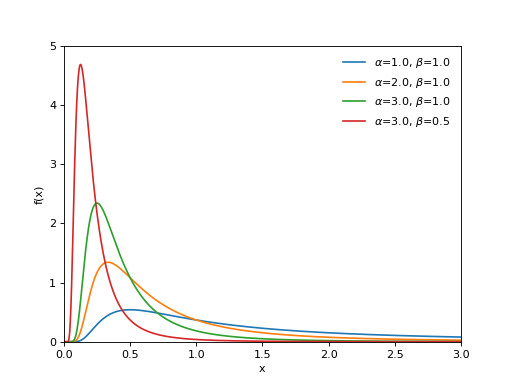Support \(x \in (0, \infty)\) Mean \(\dfrac{\beta}{\alpha-1}\) for \(\alpha > 1\) Variance \(\dfrac{\beta^2}{(\alpha-1)^2(\alpha)}\) for \(\alpha > 2\) Parameters: - alpha (float) – Shape parameter (alpha > 0).
- beta (float) – Scale parameter (beta > 0).
{kind=link}
{kind=link}
-
class
pymc3.distributions.continuous.ExGaussian(mu, sigma, nu, *args, **kwargs)¶ Exponentially modified Gaussian log-likelihood.
Results from the convolution of a normal distribution with an exponential distribution.
\[f(x \mid \mu, \sigma, \tau) = \frac{1}{\nu}\; \exp\left\{\frac{\mu-x}{\nu}+\frac{\sigma^2}{2\nu^2}\right\} \Phi\left(\frac{x-\mu}{\sigma}-\frac{\sigma}{\nu}\right)\]where \(\Phi\) is the cumulative distribution function of the standard normal distribution.
(Source code, png, hires.png, pdf)
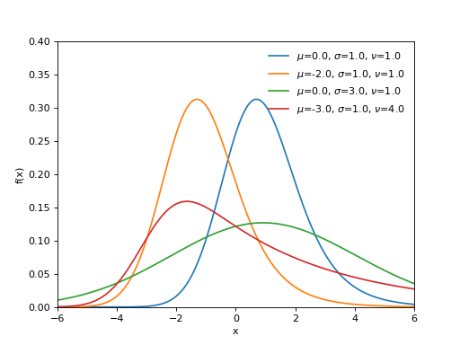Support \(x \in \mathbb{R}\) Mean \(\mu + \nu\) Variance \(\sigma^2 + \nu^2\) Parameters: - mu (float) – Mean of the normal distribution.
- sigma (float) – Standard deviation of the normal distribution (sigma > 0).
- nu (float) – Mean of the exponential distribution (nu > 0).
References
[Rigby20051014] Rigby R.A. and Stasinopoulos D.M. (2005). “Generalized additive models for location, scale and shape” Applied Statististics., 54, part 3, pp 507-554. [Lacouture20081014] Lacouture, Y. and Couseanou, D. (2008). “How to use MATLAB to fit the ex-Gaussian and other probability functions to a distribution of response times”. Tutorials in Quantitative Methods for Psychology, Vol. 4, No. 1, pp 35-45.
{kind=link}
{kind=link}
-
class
pymc3.distributions.continuous.VonMises(mu=0.0, kappa=None, transform='circular', *args, **kwargs)¶ Univariate VonMises log-likelihood.
\[f(x \mid \mu, \kappa) = \frac{e^{\kappa\cos(x-\mu)}}{2\pi I_0(\kappa)}\]where \(I_0\) is the modified Bessel function of order 0.
(Source code, png, hires.png, pdf)
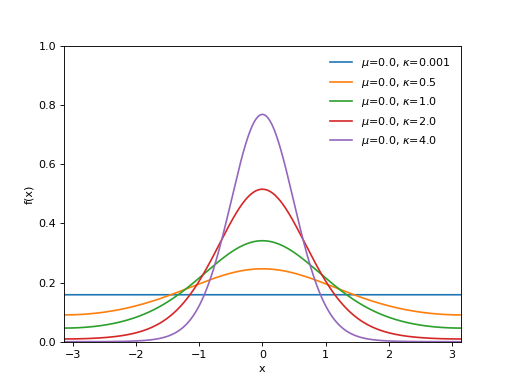Support \(x \in [-\pi, \pi]\) Mean \(\mu\) Variance \(1-\frac{I_1(\kappa)}{I_0(\kappa)}\) Parameters: - mu (float) – Mean.
- kappa (float) – Concentration (frac{1}{kappa} is analogous to sigma^2).
{kind=link}
{kind=link}
-
class
pymc3.distributions.continuous.SkewNormal(mu=0.0, sd=None, tau=None, alpha=1, *args, **kwargs)¶ Univariate skew-normal log-likelihood.
\[f(x \mid \mu, \tau, \alpha) = 2 \Phi((x-\mu)\sqrt{\tau}\alpha) \phi(x,\mu,\tau)\](Source code, png, hires.png, pdf)
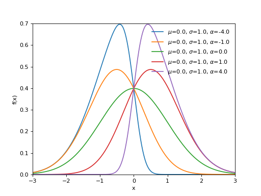Support \(x \in \mathbb{R}\) Mean \(\mu + \sigma \sqrt{\frac{2}{\pi}} \frac {\alpha }{{\sqrt {1+\alpha ^{2}}}}\) Variance \(\sigma^2 \left( 1-\frac{2\alpha^2}{(\alpha^2+1) \pi} \right)\) Skew-normal distribution can be parameterized either in terms of precision or standard deviation. The link between the two parametrizations is given by
\[\tau = \dfrac{1}{\sigma^2}\]Parameters: - mu (float) – Location parameter.
- sd (float) – Scale parameter (sd > 0).
- tau (float) – Alternative scale parameter (tau > 0).
- alpha (float) – Skewness parameter.
Notes
When alpha=0 we recover the Normal distribution and mu becomes the mean, tau the precision and sd the standard deviation. In the limit of alpha approaching plus/minus infinite we get a half-normal distribution.
{kind=link}
{kind=link}
-
class
pymc3.distributions.continuous.Logistic(mu=0.0, s=1.0, *args, **kwargs)¶ Logistic log-likelihood.
\[f(x \mid \mu, s) = \frac{\exp\left(-\frac{x - \mu}{s}\right)}{s \left(1 + \exp\left(-\frac{x - \mu}{s}\right)\right)^2}\]Support \(x \in \mathbb{R}\) Mean \(\mu\) Variance \(\frac{s^2 \pi^2}{3}\) (Source code, png, hires.png, pdf)
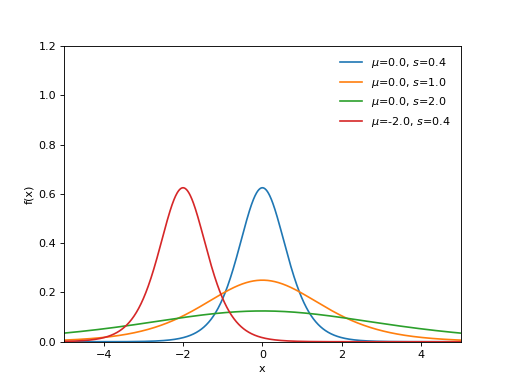Parameters: - mu (float) – Mean.
- s (float) – Scale (s > 0).
{kind=link}
{kind=link}
-
class
pymc3.distributions.continuous.Interpolated(x_points, pdf_points, transform='interval', *args, **kwargs)¶ Univariate probability distribution defined as a linear interpolation of probability density function evaluated on some lattice of points.
The lattice can be uneven, so the steps between different points can have different size and it is possible to vary the precision between regions of the support.
The probability density function values don not have to be normalized, as the interpolated density is any way normalized to make the total probability equal to $1$.
Both parameters x_points and values pdf_points are not variables, but plain array-like objects, so they are constant and cannot be sampled.
Support \(x \in [x\_points[0], x\_points[-1]]\) Parameters: - x_points (array-like) – A monotonically growing list of values
- pdf_points (array-like) – Probability density function evaluated on lattice x_points